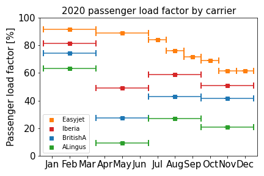

We already saw in the pre COVID-19 era that passenger load factors varied by carrier from the low 60s to the high 90s, with an average of around 80%. The second half of 2020 saw that average drop to 60%. How does this figure change from one carrier to another?
Using traffic statistics published by the airlines, we find an enormous spread. At the upper end of the spectrum, Easyjet reports a passenger load factor of 89.0% in the second quarter of 2020, falling to 61.6% in December 2020. On the other hand, Aer Lingus reports a passenger load factor of 9.2% in the second quarter of 2020, rising only to 20.9% in the fourth quarter. In this chaotic year, the carrier averages themselves probably also have a large spread depending on route and date.
This data strengthens the case for the post-flight carbon offset. Trying to predict a personal carbon responsibility from such turbulent data has huge uncertainty. The best way to calculate an accurate personal carbon offset is for the airline itself to do it after the flight, with all relevant data to hand.
Traffic statistics accessed 2021-04.